-
Basic Validation
23:27:08 PM / 56:57:338 Fail
Basic Validation
12.14.2023 23:27:08 12.14.2023 23:54:06 56:57:338 · #test-id=1PassCashier Out From Till Management ScreenGiven I'm logged inAnd I closed the order type windowAnd I click on the Settings buttonAnd I click on the Till Management buttonWhen I verify till is available or not if available closed the tillThen I should see open till management screenAnd I click reports button in the Till management screenAnd I click cashier out button in the Till management screenThen I should see do you want to print the cashier out popupAnd I click Yes button on the popup for Hold itemThen I should see cashier out saved successfully popupAnd I click Done button on the PopupAnd I click power buttonFailRefundGiven I'm logged inAnd I closed the order type windowAnd I get check numberAnd I select Menu of Basic validation for QSR as "Salad"And I get the total of menu item in order screenAnd I click Payment button in the Order Management ScreenAnd I click cash button from the payment method popupAnd I click Submit button on the Payment WindowAnd I closed the order type windowAnd I click the Settings buttonAnd I click close day tabThen I should see close day screenAnd I click "//button[contains(.,'Close All Cashiers')]" in the close the day Popup window "Click Close All Cashiers"When I verify the cannot close the shift, store have the active checksAnd I click "//button[contains(.,'Close The Day')]" in the close the day Popup window "Click Close The Day"When I click the Close the day button in the operation screen "Close The Day" "Click Close the day Button"And I click Yes button on the popup for Hold itemWhen I click the "//button[contains(.,'Submit')]" in the close the day screen "click submit button"And I click Done button on the PopupAnd I click the Toggle Icon buttonAnd I click Refund button in the operation windowWhen I search the closed check in refund screenStep skippedAnd I verify total of menu in Refund screen amountStep skippedAnd I click refund button in the refund screenStep skippedAnd I verify check number in refund amount windowStep skippedAnd I verify check amount same with refund window amount and also defaulty check amount in number padStep skippedWhen I enter the reason in the Refund windowStep skippedAnd I hide the keyboardStep skippedWhen I enter the payment as "Cash" in the refund windowStep skippedThen I should see do you want to refund confirm popupStep skippedAnd I click No button on send to kitchen popupStep skippedWhen I enter the huge value than the refund value in refund windowStep skippedWhen I enter the payment as "Cash" in the refund windowStep skippedThen I should see the amount exceeds the paid amount popupStep skippedAnd I click Done button on the PopupStep skippedWhen I enter the same value of the refund value in refund windowStep skippedWhen I enter the payment as "Cash" in the refund windowStep skippedThen I should see do you want to refund confirm popupStep skippedAnd I click Yes button on the popup for Hold itemStep skippedThen I should see refund success popupStep skippedAnd I click Done button on the PopupStep skippedWhen I click refund without receipt button in the refund windowStep skippedThen I should verify defaulty number pad should have "0,00" on the refund windowStep skippedAnd I click cancel button in the refund windowStep skippedWhen I click refund without receipt button in the refund windowStep skippedAnd I enter the amount as "5430" on the refund windowStep skippedAnd I enter the refund reason as "Refund" on the refund windowStep skippedWhen I enter the payment as "Cash" in the refund windowStep skippedThen I should see do you want to refund confirm popupStep skippedAnd I click Yes button on the popup for Hold itemStep skippedThen I should see refund success popupStep skippedAnd I click Done button on the PopupStep skippedAnd I click refund menu items button on the refund screenStep skippedThen I should see please select the check popupStep skippedAnd I click Done button on the PopupStep skippedAnd I search the closed check in refund screenStep skippedAnd I click refund menu items button on the refund screenStep skippedThen I Should get back to the Order ScreenStep skippedThen I should verify the refund check number with order screen check numberStep skippedThen I should verify the button as "Refund Check" "Refund Items" "Done" on the refund order screenStep skippedAnd I select the menu in the Refund order screenStep skippedAnd I click refund items on the refund order screenStep skippedAnd I click Done button on the PopupStep skippedAnd I click the refund check button on the refund order screenStep skippedThen I should see check is refunded already popupStep skippedAnd I click Done button on the PopupStep skippedAnd I click Done button on the refund order screenStep skippedAnd I search the closed check in refund screenStep skippedAnd I click refund menu items button on the refund screenStep skippedThen I Should get back to the Order ScreenStep skippedThen I should verify the refund check number with order screen check numberStep skippedThen I should verify the button as "Refund Check" "Refund Items" "Done" on the refund order screenStep skippedAnd I click Done button on the refund order screenStep skippedAnd I click power buttonStep skippedcom.qa.stepdef.Hooks.quit(io.cucumber.java.Scenario)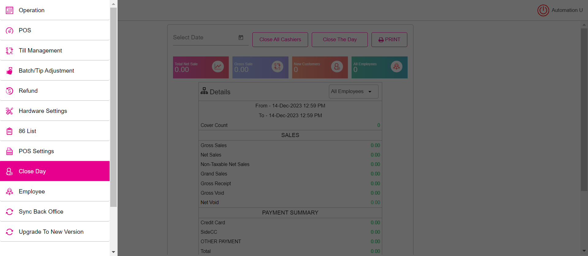FailGlobal Till ( PAY IN, PAy Out )Given I'm logged inAnd I closed the order type windowAnd I click on the Settings buttonAnd I click on the Till Management buttonWhen I verify till is available or not if available closed the tillThen I should see open till management screenAnd I press first number of the totalAnd I press second number of the totalAnd I press third number of the totalWhen I press Continue for open tillThen verify active till as global tillWhen I get the active till detailsThen verify till balance same with amount givenAnd I click the Toggle Icon buttonAnd I click POS Icon from ToggleAnd I closed the order type windowAnd I click AllAnd I click Table Layout tabAnd I select Menu For Basic validation as "Salad"And I get the total of menu item in order screenStep skippedAnd I click Cash button for Complete SaleStep skippedAnd I click Exact button on the cash pop-upStep skippedAnd I get Total of menuStep skippedAnd I click Enter Button on the cash pop-upStep skippedAnd I click Table Layout tabStep skippedAnd I click QSR tabStep skippedAnd I closed the order type windowStep skippedAnd I click on the Settings buttonStep skippedAnd I click on the Till Management buttonStep skippedThen I should see active till total has changed depends on menu totalStep skippedAnd I click pay in button in the till management screenStep skippedAnd I enter Paid By as "KamilTT"Step skippedAnd I enter first number of the paymentStep skippedAnd I enter second number of the paymentStep skippedAnd I enter third number of the paymentStep skippedAnd I get pay In valueStep skippedAnd I click ContinueStep skippedAnd I should see the Reasons window with title "Reasons"Step skippedAnd I select the pay in reason as Paid InStep skippedWhen I click OK button to select the payment reasonStep skippedAnd I click Till buttonStep skippedThen I should see active till total has changed depends on Pay inStep skippedAnd I get the details of Active detailsStep skippedWhen I click pay out button in the till management screenStep skippedAnd I enter Paid By as "KamilTT"Step skippedAnd I enter first number of the paymentStep skippedAnd I enter second number of the paymentStep skippedAnd I enter third number of the paymentStep skippedAnd I get pay Out valueStep skippedAnd I click ContinueStep skippedAnd I should see the Reasons window with title "Reasons"Step skippedAnd I select the pay in reason as Paid OutStep skippedWhen I click OK button to select the payment reasonStep skippedAnd I click Till buttonStep skippedThen I should see active till total has changed depends on Pay outStep skippedAnd I click the Toggle Icon buttonStep skippedAnd I click the POS settings from ToggleStep skippedAnd I click cash drop from Till settingsStep skippedAnd I click the Toggle Icon buttonStep skippedAnd I click till management button from the operation windowStep skippedWhen I click cash drop button from the till windowStep skippedAnd I click Till buttonStep skippedWhen I get the details of Active detailsStep skippedAnd I click the cash drop button and enter value for cash drop as "$ 20.76"Step skippedAnd I click the Toggle Icon buttonStep skippedAnd I click the POS settings from ToggleStep skippedAnd I click cash drop from Till settingsStep skippedAnd I click the Toggle Icon buttonStep skippedAnd I click till management button from the operation windowStep skippedAnd I click reports button in the Till management screenStep skippedAnd I click cashier out button in the Till management screenStep skippedThen I should see you have an Active till do you want to close the till popupStep skippedAnd I click Yes button on the popup for Hold itemStep skippedWhen I verify the cash expected value and closed tillStep skippedThen I should see do you want to print the cashier out popupStep skippedAnd I click Yes button on the popup for Hold itemStep skippedThen I should see cashier out saved successfully popupStep skippedAnd I click Done button on the PopupStep skippedAnd I click power buttonStep skippedcom.qa.stepdef.Hooks.quit(io.cucumber.java.Scenario)FailVerify the Pay in, Payout, Audit, Single cashier out, Close the day for the current business day(Clock in, start till(user till, Global till))Given I'm logged inAnd I closed the order type windowAnd I click on the Settings buttonAnd I click on the Till Management buttonWhen I verify till is available or not if available closed the tillThen I should see open till management screenAnd I click reports button in the Till management screenWhen I get gross value from the reports of till management windowAnd I click Till buttonThen I should see open till management screenAnd I select global till option in open tillAnd I press first number of the totalAnd I press second number of the totalAnd I press third number of the totalWhen I press Continue for open tillWhen I get the active till detailsThen verify till balance same with amount givenAnd I click the Toggle Icon buttonAnd I click POS Icon from ToggleAnd I closed the order type windowAnd I click AllAnd I click Table Layout tabAnd I select Menu For Basic validation as "Salad"And I get the total of menu item in order screenStep skippedAnd I click Cash button for Complete SaleStep skippedAnd I click Exact button on the cash pop-upStep skippedAnd I get Total of menuStep skippedAnd I click Enter Button on the cash pop-upStep skippedAnd I click Table Layout tabStep skippedAnd I click QSR tabStep skippedAnd I closed the order type windowStep skippedAnd I click on the Settings buttonStep skippedAnd I click on the Till Management buttonStep skippedThen I should see active till total has changed depends on menu totalStep skippedAnd I click pay in button in the till management screenStep skippedAnd I enter Paid By as "KamilTT"Step skippedAnd I enter first number of the paymentStep skippedAnd I enter second number of the paymentStep skippedAnd I enter third number of the paymentStep skippedAnd I get pay In valueStep skippedAnd I click ContinueStep skippedAnd I should see the Reasons window with title "Reasons"Step skippedAnd I select the pay in reason as Paid InStep skippedWhen I click OK button to select the payment reasonStep skippedThen I should see payment successful pop-up with the message "Paid In Successfully" pay inStep skippedAnd I click Done button on the PopupStep skippedAnd I click Till buttonStep skippedThen I should see active till total has changed depends on Pay inStep skippedAnd I get the details of Active detailsStep skippedWhen I click pay out button in the till management screenStep skippedAnd I enter Paid By as "KamilTT"Step skippedAnd I enter first number of the paymentStep skippedAnd I enter second number of the paymentStep skippedAnd I enter third number of the paymentStep skippedAnd I get pay Out valueStep skippedAnd I click ContinueStep skippedAnd I should see the Reasons window with title "Reasons"Step skippedAnd I select the pay in reason as Paid OutStep skippedWhen I click OK button to select the payment reasonStep skippedThen I should see pop-up with the message "Paid Out Successfully" for the pay outStep skippedAnd I click Done button on the PopupStep skippedAnd I click Till buttonStep skippedThen I should see active till total has changed depends on Pay outStep skippedAnd I click the Toggle Icon buttonStep skippedAnd I click the POS settings from ToggleStep skippedAnd I click cash drop from Till settingsStep skippedAnd I click the Toggle Icon buttonStep skippedAnd I click till management button from the operation windowStep skippedWhen I click cash drop button from the till windowStep skippedAnd I click Till buttonStep skippedWhen I get the details of Active detailsStep skippedAnd I click the cash drop button and enter value for cash drop as "$ 20.76"Step skippedAnd I click the Toggle Icon buttonStep skippedAnd I click the POS settings from ToggleStep skippedAnd I click cash drop from Till settingsStep skippedAnd I click the Toggle Icon buttonStep skippedAnd I click till management button from the operation windowStep skippedAnd I click reports button in the Till management screenStep skippedAnd I click cashier out button in the Till management screenStep skippedThen I should see you have an Active till do you want to close the till popupStep skippedAnd I click Yes button on the popup for Hold itemStep skippedWhen I verify the cash expected value and closed tillStep skippedThen I should see do you want to print the cashier out popupStep skippedAnd I click Yes button on the popup for Hold itemStep skippedThen I should see cashier out saved successfully popupStep skippedAnd I click Done button on the PopupStep skippedAnd I click power buttonStep skippedcom.qa.stepdef.Hooks.quit(io.cucumber.java.Scenario)FailAdded tip is Correct or notGiven I'm logged inAnd I closed the order type windowAnd I select FOOD as categoryAnd I select menu item as "Onion Rings"Step skippedAnd I click Payment button in the Order Management ScreenStep skippedAnd I click side cc button in the payment windowStep skippedThen I should see total screenStep skippedAnd I click tip as 10Step skippedAnd I get tip value from Tip screenStep skippedAnd I click the Continue button on the Total screenStep skippedWhen I verify the added tip is same in Payment screenStep skippedAnd I click Submit button in the Payment popupStep skippedAnd I closed the order type windowStep skippedAnd I click log off button in order screenStep skippedcom.qa.stepdef.Hooks.quit(io.cucumber.java.Scenario)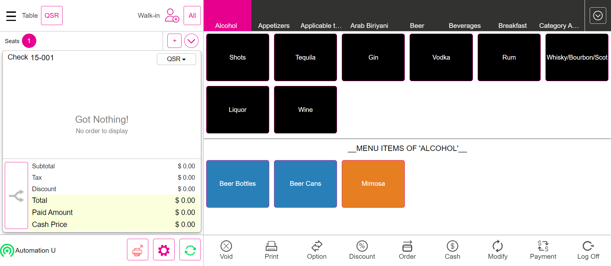PassBussiness Date Verify with Close day window DateWhen I get he Bussiness date from the order screenGiven I'm logged inAnd I closed the order type windowAnd I click AllAnd I click Table Layout tabAnd I click the Operation button on the Table LayoutAnd I click close day tabWhen I verify bussiness date with close day screenAnd I click power buttonFailCashier OUT PULL RequestGiven Im logged in for cashier1And I created sale for Cashier out1 as "FOOD"Given Im logged in for cashier2Step skippedAnd I created sale for Cashier out2 as "Salad"Step skippedAnd I click power buttonStep skippedGiven Im logged in for cashier3Step skippedAnd I created sale for Cashier out3 as "Salad"Step skippedGiven Im logged in for cashier4Step skippedAnd I created sale for Cashier out4 as "Salad"Step skippedAnd I click power buttonStep skippedGiven I'm logged in for Phone storeStep skippedAnd I closed the order type windowStep skippedAnd I click the Settings buttonStep skippedAnd I click till management button from the operation windowStep skippedWhen I verify till is available or not if available closed the tillStep skippedAnd I click reports button in the Till management screenStep skippedAnd I select the cashier1 on the report screenStep skippedAnd I select the cashier2 on the report screenStep skippedAnd I select the cashier3 on the report screenStep skippedAnd I select the cashier4 on the report screenStep skippedAnd I click power buttonStep skippedcom.qa.stepdef.Hooks.quit(io.cucumber.java.Scenario)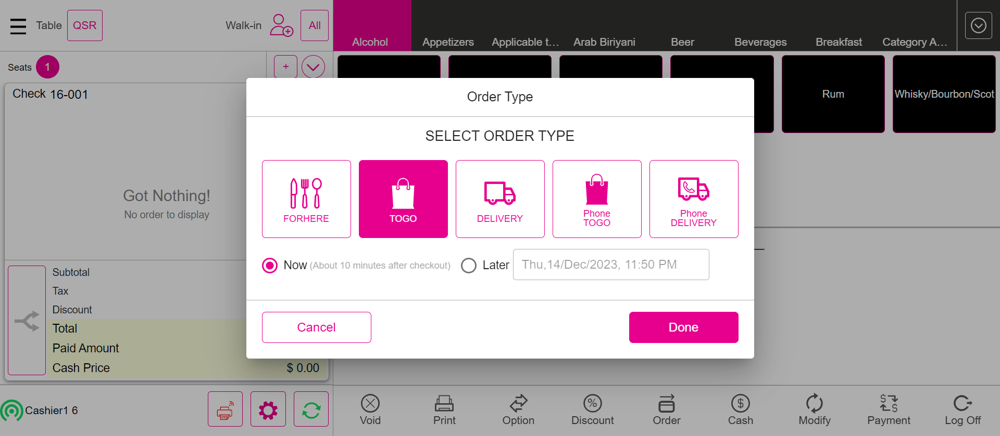FailUser TillGiven I'm logged inAnd I closed the order type windowAnd I click on the Settings buttonAnd I click on the Till Management buttonWhen I verify till is available or not if available closed the tillThen I should see open till management screenAnd I select global till option in open tillAnd I press first number of the totalAnd I press second number of the totalAnd I press third number of the totalWhen I press Continue for open tillWhen I get the active till detailsThen verify till balance same with amount givenAnd I click the Toggle Icon buttonAnd I click POS Icon from ToggleAnd I closed the order type windowAnd I click AllAnd I click Table Layout tabAnd I select Menu For Basic validation as "Salad"And I click Cash button for Complete SaleStep skippedAnd I click Exact button on the cash pop-upStep skippedAnd I get Total of menuStep skippedAnd I click Enter Button on the cash pop-upStep skippedAnd I click Table Layout tabStep skippedAnd I click QSR tabStep skippedAnd I closed the order type windowStep skippedAnd I click on the Settings buttonStep skippedAnd I click on the Till Management buttonStep skippedThen I should see active till total has changed depends on menu totalStep skippedAnd I click Active till checkStep skippedAnd I click the Close Till buttonStep skippedThen I should see close till confirmation pop-upStep skippedAnd I click yes to open Close Till ScreenStep skippedThen I should see that the Close Till window is displayedStep skippedAnd I enter the amount greater than balance amountStep skippedAnd I click the Continue buttonStep skippedThen I should see over shortage popupStep skippedAnd I enter reason for discrepency notesStep skippedAnd I click Done button on the PopupStep skippedThen I should see total summaryStep skippedAnd I click submit button on total summaryStep skippedAnd I click Set Till buttonStep skippedThen I should see open till management screenStep skippedAnd I select global till option in open tillStep skippedAnd I press first number of the totalStep skippedAnd I press second number of the totalStep skippedAnd I press third number of the totalStep skippedWhen I press Continue for open tillStep skippedWhen I get the active till detailsStep skippedThen verify till balance same with amount givenStep skippedAnd I click the Toggle Icon buttonStep skippedAnd I click POS Icon from ToggleStep skippedAnd I closed the order type windowStep skippedAnd I click AllStep skippedAnd I click Table Layout tabStep skippedAnd I select Menu For Basic validation as "Salad"Step skippedAnd I click Cash button for Complete SaleStep skippedAnd I click Exact button on the cash pop-upStep skippedAnd I get Total of menuStep skippedAnd I click Enter Button on the cash pop-upStep skippedAnd I click Table Layout tabStep skippedAnd I click QSR tabStep skippedAnd I closed the order type windowStep skippedAnd I click on the Settings buttonStep skippedAnd I click on the Till Management buttonStep skippedThen I should see active till total has changed depends on menu totalStep skippedAnd I click Active till checkStep skippedAnd I click the Close Till buttonStep skippedThen I should see close till confirmation pop-upStep skippedAnd I click yes to open Close Till ScreenStep skippedThen I should see that the Close Till window is displayedStep skippedAnd I enter the amount smaller than balance amountStep skippedAnd I click the Continue buttonStep skippedThen I should see over shortage popupStep skippedAnd I enter reason for discrepency notesStep skippedAnd I click Done button on the PopupStep skippedThen I should see total summaryStep skippedAnd I click submit button on total summaryStep skippedAnd I click Closed till buttonStep skippedAnd I get the closed till check detailsStep skippedAnd I click power buttonStep skippedcom.qa.stepdef.Hooks.quit(io.cucumber.java.Scenario)FailGlobal TillGiven I'm logged inAnd I closed the order type windowAnd I click on the Settings buttonAnd I click on the Till Management buttonWhen I verify till is available or not if available closed the tillThen I should see open till management screenAnd I press first number of the totalAnd I press second number of the totalAnd I press third number of the totalWhen I press Continue for open tillThen verify active till as global tillWhen I get the active till detailsThen verify till balance same with amount givenAnd I click the Toggle Icon buttonAnd I click POS Icon from ToggleAnd I closed the order type windowAnd I click AllAnd I click Table Layout tabAnd I select Menu For Basic validation as "Salad"And I click Cash button for Complete SaleStep skippedAnd I click Exact button on the cash pop-upStep skippedAnd I get Total of menuStep skippedAnd I click Enter Button on the cash pop-upStep skippedAnd I click Table Layout tabStep skippedAnd I click QSR tabStep skippedAnd I closed the order type windowStep skippedAnd I click on the Settings buttonStep skippedAnd I click on the Till Management buttonStep skippedThen I should see active till total has changed depends on menu totalStep skippedAnd I click Active till checkStep skippedAnd I click the Close Till buttonStep skippedThen I should see close till confirmation pop-upStep skippedAnd I click yes to open Close Till ScreenStep skippedThen I should see that the Close Till window is displayedStep skippedAnd I enter the amount greater than balance amountStep skippedAnd I click the Continue buttonStep skippedThen I should see over shortage popupStep skippedAnd I enter reason for discrepency notesStep skippedAnd I click Done button on the PopupStep skippedThen I should see total summaryStep skippedAnd I click submit button on total summaryStep skippedAnd I click Set Till buttonStep skippedThen I should see open till management screenStep skippedAnd I press first number of the totalStep skippedAnd I press second number of the totalStep skippedAnd I press third number of the totalStep skippedWhen I press Continue for open tillStep skippedThen verify active till as global tillStep skippedWhen I get the active till detailsStep skippedThen verify till balance same with amount givenStep skippedAnd I click the Toggle Icon buttonStep skippedAnd I click POS Icon from ToggleStep skippedAnd I closed the order type windowStep skippedAnd I click AllStep skippedAnd I click Table Layout tabStep skippedAnd I select Menu For Basic validation as "Salad"Step skippedAnd I click Cash button for Complete SaleStep skippedAnd I click Exact button on the cash pop-upStep skippedAnd I get Total of menuStep skippedAnd I click Enter Button on the cash pop-upStep skippedAnd I click Table Layout tabStep skippedAnd I click QSR tabStep skippedAnd I closed the order type windowStep skippedAnd I click on the Settings buttonStep skippedAnd I click on the Till Management buttonStep skippedThen I should see active till total has changed depends on menu totalStep skippedAnd I click Active till checkStep skippedAnd I click the Close Till buttonStep skippedThen I should see close till confirmation pop-upStep skippedAnd I click yes to open Close Till ScreenStep skippedThen I should see that the Close Till window is displayedStep skippedAnd I enter the amount smaller than balance amountStep skippedAnd I click the Continue buttonStep skippedThen I should see over shortage popupStep skippedAnd I enter reason for discrepency notesStep skippedAnd I click Done button on the PopupStep skippedThen I should see total summaryStep skippedAnd I click submit button on total summaryStep skippedAnd I click Closed till buttonStep skippedAnd I get the closed till check detailsStep skippedAnd I click power buttonStep skippedcom.qa.stepdef.Hooks.quit(io.cucumber.java.Scenario)FailVerify the Cash Discount charge for the checkGiven I'm logged inAnd I closed the order type windowAnd I click AllAnd I click Table Layout tabAnd I select Menu For Basic validation as "Salad"And I get the cash option value and add with menu totalStep skippedAnd I click Payment button in the Order Management ScreenStep skippedWhen I get the balance Due Amount and cash option amount in payment windowStep skippedAnd I click cash button from the payment method popupStep skippedThen verify the cash option in payment screenStep skippedAnd I click Exit to return to Order Management ScreenStep skippedWhen verify the paid Amount in Order Screen for cash optionStep skippedWhen verify cash discount is display in order screenStep skippedAnd I click Payment button in the Order Management ScreenStep skippedAnd I click Submit button in the Payment popupStep skippedAnd I click Table Layout tabStep skippedAnd I click power buttonStep skippedcom.qa.stepdef.Hooks.quit(io.cucumber.java.Scenario)FailTransfer Item from one Check to another CheckGiven Login with valid pin in split screenAnd I closed the order type windowStep skippedGiven User click All button in QSRStep skippedWhen User click the Table Layout optionStep skippedAnd I select Menu For Basic validation as "Menu"Step skippedAnd I click Finish Order buttonStep skippedAnd I click Table Layout tabStep skippedAnd User select the Transfer buttonStep skippedAnd User verify Transfer to Server, Transfer to Table and Transfer Item are displayedStep skippedAnd User select the Transfer Item OptionStep skippedWhen I select check for transferredStep skippedAnd Select the required menu item from the Menu Item TableStep skippedWhen I select check for transferred1Step skippedAnd Click the Done buttonStep skippedAnd Verify the Successful message of Transfer ItemStep skippedAnd I click Done button on the PopupStep skippedWhen I click transferred table after done transfer processStep skippedThen Verify the Transferred menu item is available or not in the receiving tableStep skippedAnd Click the finish buttonStep skippedAnd I click power buttonStep skippedcom.qa.stepdef.Hooks.quit(io.cucumber.java.Scenario)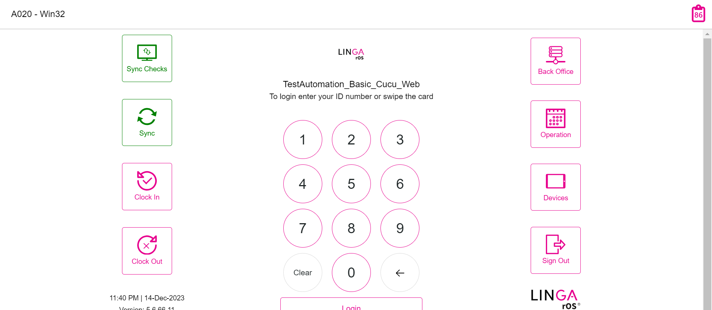FailTransfer To Table from one Check to another CheckGiven Login with valid pin in split screenAnd I closed the order type windowStep skippedGiven User click All button in QSRStep skippedWhen User click the Table Layout optionStep skippedAnd User select the two Empty table and take the orderStep skippedAnd User select the Transfer buttonStep skippedAnd User verify Transfer to Server, Transfer to Table and Transfer Item are displayedStep skippedAnd User select the Transfer to Table OptionStep skippedThen Select anyone Table from the Transfer From TableStep skippedAnd Select the required check from the Checks TableStep skippedThen Select anyone Table from the Transfer To TableStep skippedAnd Click the Done buttonStep skippedAnd Verify the Successful message of Transfer To TableStep skippedAnd I click Done button on the PopupStep skippedAnd Check the Transferred from tableStep skippedAnd I click power buttonStep skippedcom.qa.stepdef.Hooks.quit(io.cucumber.java.Scenario)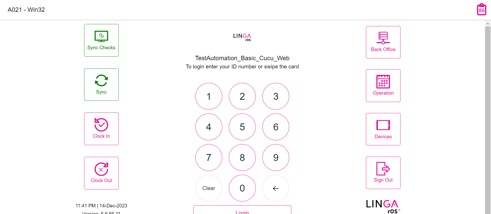FailVerify the "Transfer to Server" from one check to another checkGiven I'm logged inAnd I closed the order type windowGiven User click All button in QSRWhen User click the Table Layout optionAnd User select the Empty table and take the orderAnd Get the Server Name from The required TableStep skippedAnd User select the Transfer buttonStep skippedAnd User verify Transfer to Server, Transfer to Table and Transfer Item are displayedStep skippedAnd User select the Transfer to Server OptionStep skippedThen Select correct server from the Transfer From TableStep skippedAnd Select the required check from the Checks Table for Transfer ServerStep skippedThen Select anyone server from the Transfer To TableStep skippedAnd Click the Done buttonStep skippedAnd Verify the Successful message of Transfer To ServerStep skippedAnd I click Done button on the PopupStep skippedThen Verify the server name is available or not in the required tableStep skippedAnd I click power buttonStep skippedcom.qa.stepdef.Hooks.quit(io.cucumber.java.Scenario)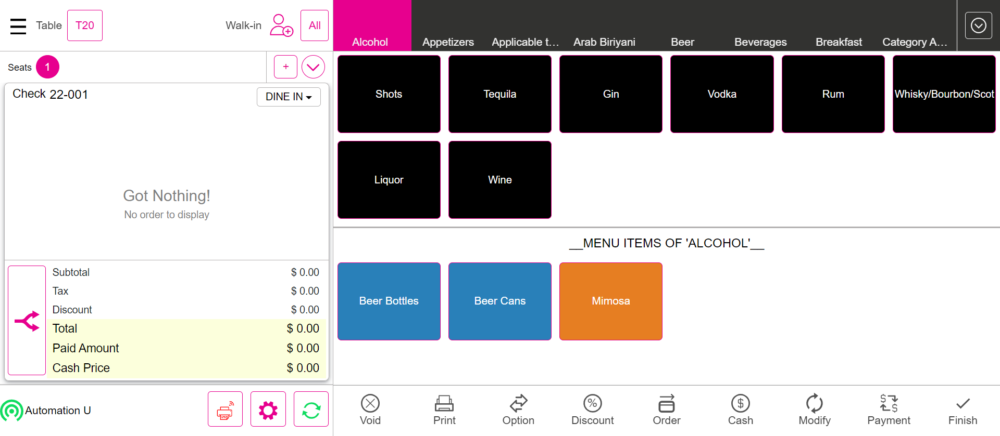FailOther than Cash PaymentGiven I'm logged inAnd I closed the order type windowAnd I click AllAnd I click Table Layout tabAnd I select Menu For Basic validation as "Salad"And I get the cash option value and add with menu totalStep skippedAnd I click Payment button in the Order Management ScreenStep skippedWhen I get the balance Due Amount and cash option amount in payment windowStep skippedAnd I click side cc button in the payment windowStep skippedAnd I click the Continue button on the Total screenStep skippedThen verify the cash option in payment screenStep skippedThen verify the card option payment screenStep skippedAnd I click Exit to return to Order Management ScreenStep skippedWhen verify the paid Amount in Order Screen for card optionStep skippedWhen verify cash discount is display in order screenStep skippedAnd I click Payment button in the Order Management ScreenStep skippedAnd I click Submit button in the Payment popupStep skippedAnd I click Table Layout tabStep skippedAnd I click power buttonStep skippedcom.qa.stepdef.Hooks.quit(io.cucumber.java.Scenario) FailItem Service charge (Item Service Charge With Tax )Given I'm logged inAnd I closed the order type windowAnd I click AllAnd I click Table Layout tabAnd I select Menu For Basic validation as "TaXx"When i verify service charge with tax of menuStep skippedAnd I click Payment button in the Order Management ScreenStep skippedAnd I click cash button from the payment method popupStep skippedAnd I click Submit button on the Payment WindowStep skippedAnd I click Table Layout tabStep skippedAnd I click power buttonStep skippedcom.qa.stepdef.Hooks.quit(io.cucumber.java.Scenario)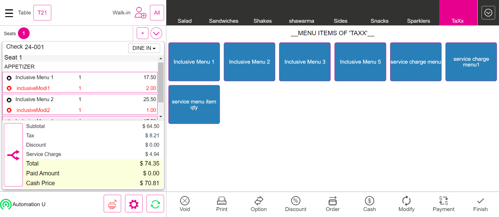FailManual Gratuity FixedGiven I'm logged inAnd I closed the order type windowAnd I click AllAnd I click Table Layout tabAnd I select Menu For Basic validation as "Salad"And I click Options buttonStep skippedAnd I click Gratuity buttonStep skippedAnd I click Gratuity Fixed buttonStep skippedAnd I verify fixed gratuity is appliedStep skippedAnd I click Payment button in the Order Management ScreenStep skippedAnd I click cash button from the payment method popupStep skippedAnd I click Submit button on the Payment WindowStep skippedAnd I click Table Layout tabStep skippedAnd I click power buttonStep skippedcom.qa.stepdef.Hooks.quit(io.cucumber.java.Scenario)FailManual Gratuity VaryingGiven I'm logged inAnd I closed the order type windowAnd I click AllAnd I click Table Layout tabAnd I select Menu For Basic validation as "Salad"And I click Options buttonStep skippedAnd I click Gratuity buttonStep skippedAnd I click Gratuity varying buttonStep skippedThen I should see enter Percentage popupStep skippedAnd I pass the value and click Apply buttonStep skippedAnd I verify varying gratuity is appliedStep skippedAnd I click Payment button in the Order Management ScreenStep skippedAnd I click cash button from the payment method popupStep skippedAnd I click Submit button on the Payment WindowStep skippedAnd I click Table Layout tabStep skippedAnd I click power buttonStep skippedcom.qa.stepdef.Hooks.quit(io.cucumber.java.Scenario)FailAuto Gratuity FixedGiven I'm logged inAnd I closed the order type windowAnd I click AllAnd I click Table Layout tabAnd I select Menu For Basic validation as "Salad"When I verify auto gratuity is applied or notStep skippedAnd I add a new seatStep skippedAnd I add a new seatStep skippedThen I should see Add Gratuity screenStep skippedAnd I click auto Gratuity Fixed buttonStep skippedAnd I select Menu of Basic validation for QSR as "Salad"Step skippedWhen I verify auto gratuity is applied or notStep skippedAnd I click Payment button in the Order Management ScreenStep skippedAnd I click cash button from the payment method popupStep skippedAnd I click Submit button on the Payment WindowStep skippedAnd I click Table Layout tabStep skippedAnd I click power buttonStep skippedcom.qa.stepdef.Hooks.quit(io.cucumber.java.Scenario)FailAuto Gratuity Varying(Multiple Auto Varying/Fixed gratuity is available means From Step 6 will be applicable)Given I'm logged inAnd I closed the order type windowAnd I click AllAnd I click Table Layout tabAnd I select Menu For Basic validation as "Salad"When I verify auto gratuity is applied or notStep skippedAnd I add a new seatStep skippedAnd I add a new seatStep skippedThen I should see Add Gratuity screenStep skippedAnd I select auto gratuity as "Auto Varying Gratuity"Step skippedThen I should see enter Percentage popupStep skippedAnd I pass the value and click Apply buttonStep skippedAnd I select Menu of Basic validation for QSR as "Salad"Step skippedWhen I verify auto gratuity is applied or notStep skippedAnd I click Payment button in the Order Management ScreenStep skippedAnd I click cash button from the payment method popupStep skippedAnd I click Submit button on the Payment WindowStep skippedAnd I click Table Layout tabStep skippedAnd I click power buttonStep skippedcom.qa.stepdef.Hooks.quit(io.cucumber.java.Scenario)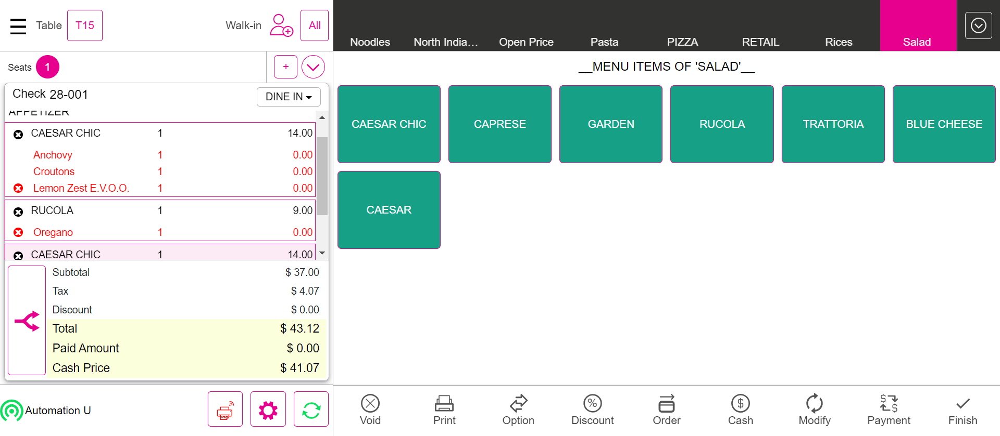FailBatch processGiven I'm logged inAnd I closed the order type windowAnd I click AllAnd I click Table Layout tabAnd I select Menu For Basic validation as "Salad"And I click Payment button in the Order Management ScreenStep skippedWhen I get the balance Due Amount and cash option amount in payment windowStep skippedAnd I click mppg auth payment in the payment windowStep skippedThen I should see tip screenStep skippedAnd I select the tip from the tip screenStep skippedAnd I click the Continue button on the Total screenStep skippedThen I should see the card details entry screenStep skippedWhen I verify subtotal,tax and total value with card details screen valueStep skippedWhen I verify the tip value with card details screen valueStep skippedWhen I verify the paid amount value is zeroStep skippedAnd I get the pay amount value from the card details screen valueStep skippedThen I verify card reader is not connected popup or notStep skippedAnd I verify the Calculation pay amount with the card details pay amountStep skippedAnd I click manual button on the your order screenStep skippedAnd I pass the card number as "4111111111111111"Step skippedAnd I pass card name as "Visa"Step skippedAnd I pass expire date as "1223"Step skippedAnd I click Process button on card screenStep skippedAnd I click Ok button in receipt printer popupStep skippedAnd I click Submit button on the Payment WindowStep skippedThen I should get back to the Table Layout tabStep skippedAnd I click the Operation button on the Table LayoutStep skippedWhen I click batch/Tip adjustment buttonStep skippedAnd I click the device drop down button on the batch screenStep skippedAnd I select the MPPG Payment name in the device listStep skippedThen I should see the list of checks in batch screenStep skippedAnd I click "Submit Batch" in the batch screen "click submit batch button"Step skippedThen I should see batch has been initiated popupStep skippedAnd I click Done button on the PopupStep skippedWhen I check the all check has been batchStep skippedcom.qa.stepdef.Hooks.quit(io.cucumber.java.Scenario)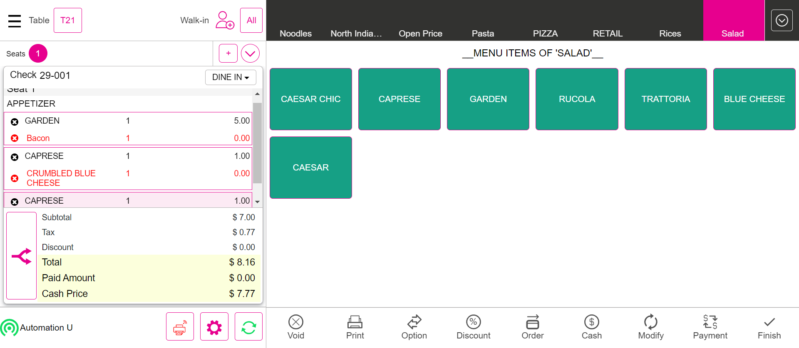FailCustomerGiven I'm logged inAnd I closed the order type windowAnd I click Add Customer ButtonThen I should see the add customer screen in the windowAnd I Click on the Byname OptionAnd Enter the new customer randomlysAnd I click the Save buttonThen I should see the customer profile windowAnd I enter the customer name randomlyStep skippedAnd I click log off button in order screenStep skippedcom.qa.stepdef.Hooks.quit(io.cucumber.java.Scenario)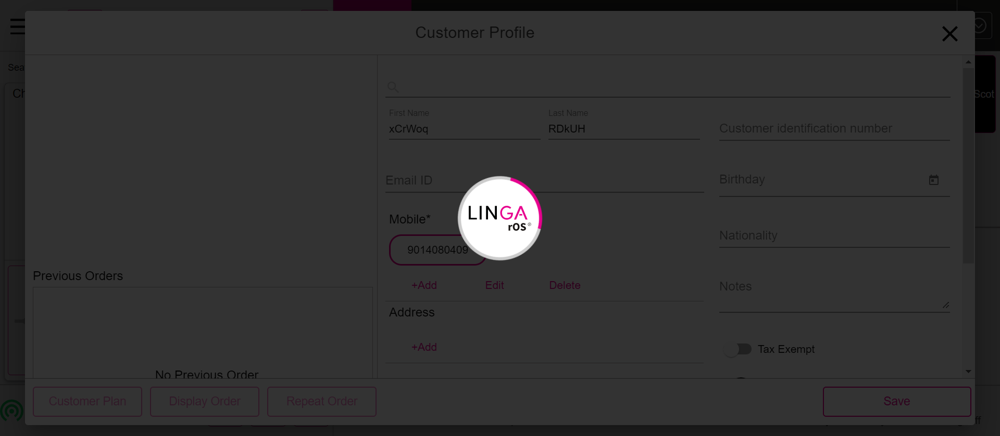FailTaxescom.qa.stepdef.Hooks.initialize(io.cucumber.java.Scenario)Given I'm logged inStep skippedAnd I close the order type windowStep skippedAnd I click AllStep skippedAnd I click Table Layout tabStep skippedAnd I click new check button on the Table layout screenStep skippedAnd I select table as "T10"Step skippedAnd I select the number of seats as "1"Step skippedAnd I tap Continue to finish selecting the number of seatsStep skippedAnd I get check numberStep skippedAnd I select category as "Menu"Step skippedAnd I select menu item as "Burger"Step skippedThen I should verify subtotal value as "$ 7.58"Step skippedThen I should verify tax value as "$ 1.78"Step skippedThen I should verify total value as "$ 9.36"Step skippedAnd I click Cash button for Complete SaleStep skippedAnd I click Exact button on the cash pop-upStep skippedAnd I click Enter Button on the cash pop-upStep skippedAnd I click Table Layout tabStep skippedAnd I click new check button on the Table layout screenStep skippedAnd I select table as "T10"Step skippedAnd I select the number of seats as "1"Step skippedAnd I tap Continue to finish selecting the number of seatsStep skippedAnd I get check numberStep skippedAnd I select category as "Menu"Step skippedAnd I select menu item as "Default Menu"Step skippedThen I should verify subtotal value as "$ 4.88"Step skippedThen I should verify tax value as "$ 0.37"Step skippedThen I should verify total value as "$ 5.25"Step skippedAnd I click Cash button for Complete SaleStep skippedAnd I click Exact button on the cash pop-upStep skippedAnd I click Enter Button on the cash pop-upStep skippedAnd I click Table Layout tabStep skippedAnd I click new check button on the Table layout screenStep skippedAnd I select table as "T7"Step skippedAnd I select the number of seats as "1"Step skippedAnd I tap Continue to finish selecting the number of seatsStep skippedAnd I select category as "Appetizers"Step skippedAnd I select menu item as "RAPINI"Step skippedThen I should see orderscreen with menu item prize as "$ 13.00"Step skippedThen I should see the tax amount reflected to the check as "$ 0.65"Step skippedThen I should see orderscreen with menu item Total as "$ 13.65"Step skippedAnd I change the Quantity of menu Item as "5"Step skippedThen I should see orderscreen with menu item prize as "$ 65.00"Step skippedThen I should see the tax amount reflected to the check as "$ 6.50"Step skippedThen I should see orderscreen with menu item Total as "$ 71.50"Step skippedAnd I change the Quantity1 of menu Item as "8"Step skippedThen I should see orderscreen with menu item prize as "$ 104.00"Step skippedThen I should see the tax amount reflected to the check as "$ 15.60"Step skippedThen I should see orderscreen with menu item Total as "$ 119.60"Step skippedAnd I click Cash button for Complete SaleStep skippedAnd I click Exact button on the cash pop-upStep skippedAnd I click Enter Button on the cash pop-upStep skippedAnd I click Table Layout tabStep skippedAnd I click new check button on the Table layout screenStep skippedAnd I select table as "T8"Step skippedAnd I select the number of seats as "1"Step skippedAnd I tap Continue to finish selecting the number of seatsStep skippedAnd I select category as "Pasta"Step skippedAnd I select menu item as RavioliPesto for Item Based Inclusive TaxStep skippedAnd I select modifier as "Butter"Step skippedAnd I click Done to get backStep skippedThen I should see orderscreen with menu item prize as "$ 15.00"Step skippedThen I should see the tax amount reflected to the check as "$ 1.36"Step skippedThen I should see orderscreen with menu item Total as "$ 15.00"Step skippedAnd I click Cash button for Complete SaleStep skippedAnd I click Exact button on the cash pop-upStep skippedAnd I click Enter Button on the cash pop-upStep skippedAnd I click Table Layout tabStep skippedAnd I click new check button on the Table layout screenStep skippedAnd I select table as "T9"Step skippedAnd I select the number of seats as "1"Step skippedAnd I tap Continue to finish selecting the number of seatsStep skippedAnd I select category as "Arab Biriyani"Step skippedAnd I select menu item as "sambar"Step skippedAnd I change the Quantity of menu Item1 as "11"Step skippedThen I should see orderscreen with menu item prize as "$ 1,100.00"Step skippedThen I should see the tax amount reflected to the check as "$ 96.57"Step skippedThen I should see orderscreen with menu item Total as "$ 1,196.57"Step skippedAnd I click Cash button for Complete SaleStep skippedAnd I click Exact button on the cash pop-upStep skippedAnd I click Enter Button on the cash pop-upStep skippedAnd I click Table Layout tabStep skippedAnd I click new check button on the Table layout screenStep skippedAnd I select table as "T10"Step skippedAnd I select the number of seats as "1"Step skippedAnd I tap Continue to finish selecting the number of seatsStep skippedAnd I select category as "Arab Biriyani"Step skippedAnd I select menu item as "sambar"Step skippedAnd I change the Quantity of menu Item1 as "12"Step skippedThen I should see orderscreen with menu item prize as "$ 1,200.00"Step skippedThen I should see the tax amount reflected to the check as "$ 105.35"Step skippedThen I should see orderscreen with menu item Total as "$ 1,305.35"Step skippedAnd I click Cash button for Complete SaleStep skippedAnd I click Exact button on the cash pop-upStep skippedAnd I click Enter Button on the cash pop-upStep skippedAnd I click Table Layout tabStep skippedAnd I click new check button on the Table layout screenStep skippedAnd I select table as "T11"Step skippedAnd I select the number of seats as "1"Step skippedAnd I tap Continue to finish selecting the number of seatsStep skippedAnd I select category as "Pasta"Step skippedAnd I select menu item as Ling Meatballs for Tax on Item TaxStep skippedAnd I select modifier as "Butter"Step skippedAnd I click Done to get backStep skippedThen I should see orderscreen with menu item prize as "$ 4.00"Step skippedThen I should see the tax amount reflected to the check as "$ 0.44"Step skippedThen I should see orderscreen with menu item Total as "$ 4.44"Step skippedAnd I click Cash button for Complete SaleStep skippedAnd I click Exact button on the cash pop-upStep skippedAnd I click Enter Button on the cash pop-upStep skippedAnd I click Table Layout tabStep skippedAnd I click new check button on the Table layout screenStep skippedAnd I select table as "T8"Step skippedAnd I select the number of seats as "1"Step skippedAnd I tap Continue to finish selecting the number of seatsStep skippedAnd I select category as "Menu"Step skippedAnd I select menu item as "Halwa"Step skippedAnd I change the Quantity of menu Item as "8"Step skippedThen I should see orderscreen with menu item prize as "$ 80.00"Step skippedThen I should see the tax amount reflected to the check as "$ 8.00"Step skippedThen I should see orderscreen with menu item Total as "$ 88.00"Step skippedAnd I click Void button on order management screenStep skippedThen I should see All orders are voidedStep skippedAnd I click Done button on the PopupStep skippedAnd I click AllStep skippedThen I should get back to the Table Layout tabStep skippedAnd I click power buttonStep skippedcom.qa.stepdef.Hooks.quit(io.cucumber.java.Scenario)FailOrdersGiven I'm logged inAnd I closed the order type windowStep skippedAnd I select Menu of Basic validation for QSR as "Salad"Step skippedAnd I click Payment button in the Order Management ScreenStep skippedAnd I click cash button from the payment method popupStep skippedAnd I click Submit button in the Payment popupStep skippedThen I should see the order type windowStep skippedAnd I closed the order type windowStep skippedAnd I select Breakfast as CategoryStep skippedAnd I select menu item as "sappthi"Step skippedAnd I select modifier as "EACH"Step skippedAnd I select modifier as "None"Step skippedAnd I click Done to get backStep skippedAnd I click Payment button in the Order Management ScreenStep skippedAnd I click cash button from the payment method popupStep skippedAnd I click Submit button in the Payment popupStep skippedThen I should see the order type windowStep skippedAnd I closed the order type windowStep skippedAnd I select FOOD as categoryStep skippedAnd I select menu item as "Tuna Tacos"Step skippedAnd I select modifier as "Croutons"Step skippedAnd I click Done to get backStep skippedAnd I click Payment button in the Order Management ScreenStep skippedAnd I click cash button from the payment method popupStep skippedAnd I click Submit button in the Payment popupStep skippedThen I should see the order type windowStep skippedAnd I closed the order type windowStep skippedAnd I select FOOD as categoryStep skippedAnd I select menu item as "B.I. Wings"Step skippedAnd I select modifier as "Spinach"Step skippedAnd I select prefix modifierStep skippedAnd I click Done to get backStep skippedThen I should verify prefix modifier added to the menuStep skippedAnd I click Payment button in the Order Management ScreenStep skippedAnd I click cash button from the payment method popupStep skippedAnd I click Submit button in the Payment popupStep skippedThen I should see the order type windowStep skippedAnd I closed the order type windowStep skippedAnd I select FOOD as categoryStep skippedAnd I select menu item as "Pizza Rucola 12inch"Step skippedAnd I select modifier as "EACH"Step skippedAnd I select modifier as "Smoked Salmon"Step skippedAnd I select prefix modifierStep skippedAnd I click Done to get backStep skippedThen I should verify prefix modifier added to the menuStep skippedAnd I click Payment button in the Order Management ScreenStep skippedAnd I click cash button from the payment method popupStep skippedAnd I click Submit button in the Payment popupStep skippedThen I should see the order type windowStep skippedAnd I close the order type windowStep skippedAnd I click log off button in order screenStep skippedcom.qa.stepdef.Hooks.quit(io.cucumber.java.Scenario)FailVerify the sale in QSR Service TypeGiven I'm logged inAnd I close the order type windowStep skippedAnd I tap QSR button to open the order types comboStep skippedAnd I get check numberStep skippedAnd I select Menu of Basic validation for QSR as "Salad"Step skippedAnd I click Order button in the order management screenStep skippedAnd I click Payment button in the Order Management ScreenStep skippedAnd I select Cash as payment methodStep skippedAnd I click Submit button on the Payment WindowStep skippedAnd I close the order type windowStep skippedAnd I click AllStep skippedAnd I click Closed tab on the Check statsStep skippedThen I should see closed check in closed check tabStep skippedAnd I click Table Layout tabStep skippedAnd I select Menu For Dine order type as "Salad"Step skippedAnd I click Order button in the order management screenStep skippedAnd I click Payment button in the Order Management ScreenStep skippedAnd I select Cash as payment methodStep skippedAnd I click Submit button on the Payment WindowStep skippedAnd I click Table Layout tabStep skippedAnd I click Check Stats tabStep skippedAnd I click Closed tab on the Check statsStep skippedThen I should see closed check in closed check tabStep skippedAnd I click QSR tabStep skippedAnd I select the order type FORHEREStep skippedThen I should see the Ordering Screen with a button with the label "For Here"Step skippedAnd I get check numberStep skippedAnd I select Menu of Basic validation for QSR as "Salad"Step skippedAnd I click Finish Order buttonStep skippedThen I should see the Phone Order tabStep skippedAnd I click the Closed check in new tab windowStep skippedAnd I click Pay Check buttonStep skippedThen I should see the Payment windowStep skippedAnd I click cash button from the payment method popupStep skippedAnd I click Submit button in the Payment popupStep skippedAnd I click Check Stats tabStep skippedAnd I click Closed tab on the Check statsStep skippedThen I should see closed check in closed check tabStep skippedAnd I click QSR tabStep skippedAnd I select the TOGO order typeStep skippedAnd I click Done button to select the order typeStep skippedThen I should see the customer profile windowStep skippedAnd I select searchStep skippedAnd I enter an existing customer's name "Auto ragav"Step skippedAnd I select the customerStep skippedWhen I click the Save buttonStep skippedThen I should see the Ordering Screen with a button with the label "To Go"Step skippedThen I should see customer as "Auto r" added on order screenStep skippedAnd I get check numberStep skippedAnd I select Menu of Basic validation for QSR as "Salad"Step skippedAnd I click Finish Order buttonStep skippedThen I should see the Phone Order tabStep skippedAnd I click the Closed check in new tab windowStep skippedAnd I click Pay Check buttonStep skippedThen I should see the Payment windowStep skippedAnd I click cash button from the payment method popupStep skippedAnd I click Submit button in the Payment popupStep skippedAnd I click Check Stats tabStep skippedAnd I click Closed tab on the Check statsStep skippedThen I should see closed check in closed check tabStep skippedAnd I click power buttonStep skippedcom.qa.stepdef.Hooks.quit(io.cucumber.java.Scenario)FailUpCharge (Verify the Upcharge for the check)Given I'm logged inAnd I closed the order type windowStep skippedAnd I click AllStep skippedAnd I click Table Layout tabStep skippedAnd I click new check button on the Table layout screenStep skippedAnd I select table as "T25"Step skippedAnd I select the number of seats as "1"Step skippedAnd I tap Continue to finish selecting the number of seatsStep skippedAnd I get check numberStep skippedAnd I select upcharge as CategoryStep skippedAnd I select menu item as "Jelabi"Step skippedThen I should verify subtotal value as "$ 2.58"Step skippedThen I should verify tax value as "$ 0.26"Step skippedThen I should verify total value as "$ 2.84"Step skippedAnd I get Total of menu while cash discount appliedStep skippedAnd I click Cash button for Complete SaleStep skippedWhen I verify total Menu same with Fast cash total when Cash discount appliedStep skippedAnd I click Exact button on the cash pop-upStep skippedAnd I click Enter Button on the cash pop-upStep skippedAnd I click Table Layout tabStep skippedAnd I click Check Stats tabStep skippedAnd I click Closed tab on the Check statsStep skippedThen I should see closed check in closed check tabStep skippedAnd I click closed checks details icon buttonStep skippedThen I should see order summary screenStep skippedWhen I verify subtotal value with order summary subtotal valueStep skippedAnd I click power buttonStep skippedcom.qa.stepdef.Hooks.quit(io.cucumber.java.Scenario)FailUpcharge (Role restriction)Given I'm logged in for BarTab for basic validationAnd I click New Tab in the Bar Tab ScreenStep skippedAnd I select upcharge as CategoryStep skippedAnd I select menu item as "Bubble Gum"Step skippedThen I should verify subtotal value as "$ 5.72"Step skippedThen I should verify tax value as "$ 0.57"Step skippedThen I should verify total value as "$ 6.29"Step skippedAnd I get Total of menu while cash discount appliedStep skippedAnd I click Cash button for Complete SaleStep skippedWhen I verify total Menu same with Fast cash total when Cash discount appliedStep skippedAnd I click Exact button on the cash pop-upStep skippedAnd I click Enter Button on the cash pop-upStep skippedAnd I click Table Layout tabStep skippedAnd I click power buttonStep skippedGiven I'm logged inStep skippedAnd I closed the order type windowStep skippedAnd I click AllStep skippedAnd I click Table Layout tabStep skippedAnd I click new check button on the Table layout screenStep skippedAnd I select table as "T25"Step skippedAnd I select the number of seats as "1"Step skippedAnd I tap Continue to finish selecting the number of seatsStep skippedAnd I get check numberStep skippedAnd I select upcharge as CategoryStep skippedAnd I select menu item as "Bubble Gum"Step skippedThen I should verify subtotal value as "$ 5.55"Step skippedThen I should verify tax value as "$ 0.56"Step skippedThen I should verify total value as "$ 6.11"Step skippedAnd I get Total of menu while cash discount appliedStep skippedAnd I click Cash button for Complete SaleStep skippedWhen I verify total Menu same with Fast cash total when Cash discount appliedStep skippedAnd I click Exact button on the cash pop-upStep skippedAnd I click Enter Button on the cash pop-upStep skippedAnd I click Table Layout tabStep skippedAnd I click Check Stats tabStep skippedAnd I click Closed tab on the Check statsStep skippedThen I should see closed check in closed check tabStep skippedAnd I click closed checks details icon buttonStep skippedThen I should see order summary screenStep skippedWhen I verify subtotal value with order summary subtotal valueStep skippedAnd I click power buttonStep skippedcom.qa.stepdef.Hooks.quit(io.cucumber.java.Scenario)
FailItem Service charge (Item Service Charge With Tax )Given I'm logged inAnd I closed the order type windowAnd I click AllAnd I click Table Layout tabAnd I select Menu For Basic validation as "TaXx"When i verify service charge with tax of menuStep skippedAnd I click Payment button in the Order Management ScreenStep skippedAnd I click cash button from the payment method popupStep skippedAnd I click Submit button on the Payment WindowStep skippedAnd I click Table Layout tabStep skippedAnd I click power buttonStep skippedcom.qa.stepdef.Hooks.quit(io.cucumber.java.Scenario)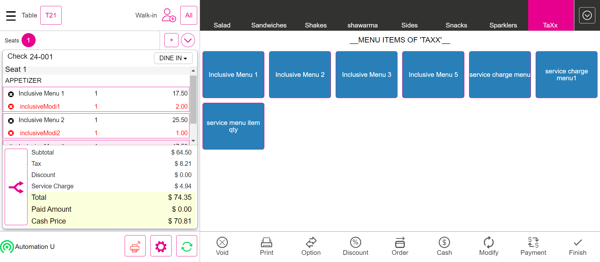FailManual Gratuity FixedGiven I'm logged inAnd I closed the order type windowAnd I click AllAnd I click Table Layout tabAnd I select Menu For Basic validation as "Salad"And I click Options buttonStep skippedAnd I click Gratuity buttonStep skippedAnd I click Gratuity Fixed buttonStep skippedAnd I verify fixed gratuity is appliedStep skippedAnd I click Payment button in the Order Management ScreenStep skippedAnd I click cash button from the payment method popupStep skippedAnd I click Submit button on the Payment WindowStep skippedAnd I click Table Layout tabStep skippedAnd I click power buttonStep skippedcom.qa.stepdef.Hooks.quit(io.cucumber.java.Scenario)FailManual Gratuity VaryingGiven I'm logged inAnd I closed the order type windowAnd I click AllAnd I click Table Layout tabAnd I select Menu For Basic validation as "Salad"And I click Options buttonStep skippedAnd I click Gratuity buttonStep skippedAnd I click Gratuity varying buttonStep skippedThen I should see enter Percentage popupStep skippedAnd I pass the value and click Apply buttonStep skippedAnd I verify varying gratuity is appliedStep skippedAnd I click Payment button in the Order Management ScreenStep skippedAnd I click cash button from the payment method popupStep skippedAnd I click Submit button on the Payment WindowStep skippedAnd I click Table Layout tabStep skippedAnd I click power buttonStep skippedcom.qa.stepdef.Hooks.quit(io.cucumber.java.Scenario)FailAuto Gratuity FixedGiven I'm logged inAnd I closed the order type windowAnd I click AllAnd I click Table Layout tabAnd I select Menu For Basic validation as "Salad"When I verify auto gratuity is applied or notStep skippedAnd I add a new seatStep skippedAnd I add a new seatStep skippedThen I should see Add Gratuity screenStep skippedAnd I click auto Gratuity Fixed buttonStep skippedAnd I select Menu of Basic validation for QSR as "Salad"Step skippedWhen I verify auto gratuity is applied or notStep skippedAnd I click Payment button in the Order Management ScreenStep skippedAnd I click cash button from the payment method popupStep skippedAnd I click Submit button on the Payment WindowStep skippedAnd I click Table Layout tabStep skippedAnd I click power buttonStep skippedcom.qa.stepdef.Hooks.quit(io.cucumber.java.Scenario)FailAuto Gratuity Varying(Multiple Auto Varying/Fixed gratuity is available means From Step 6 will be applicable)Given I'm logged inAnd I closed the order type windowAnd I click AllAnd I click Table Layout tabAnd I select Menu For Basic validation as "Salad"When I verify auto gratuity is applied or notStep skippedAnd I add a new seatStep skippedAnd I add a new seatStep skippedThen I should see Add Gratuity screenStep skippedAnd I select auto gratuity as "Auto Varying Gratuity"Step skippedThen I should see enter Percentage popupStep skippedAnd I pass the value and click Apply buttonStep skippedAnd I select Menu of Basic validation for QSR as "Salad"Step skippedWhen I verify auto gratuity is applied or notStep skippedAnd I click Payment button in the Order Management ScreenStep skippedAnd I click cash button from the payment method popupStep skippedAnd I click Submit button on the Payment WindowStep skippedAnd I click Table Layout tabStep skippedAnd I click power buttonStep skippedcom.qa.stepdef.Hooks.quit(io.cucumber.java.Scenario)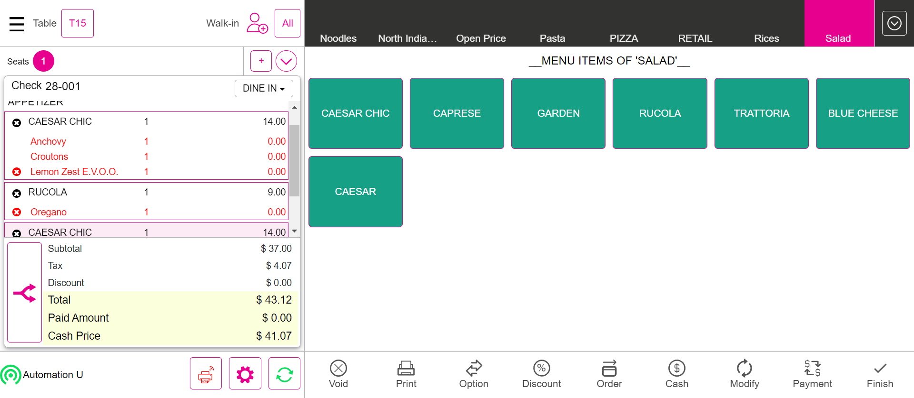FailBatch processGiven I'm logged inAnd I closed the order type windowAnd I click AllAnd I click Table Layout tabAnd I select Menu For Basic validation as "Salad"And I click Payment button in the Order Management ScreenStep skippedWhen I get the balance Due Amount and cash option amount in payment windowStep skippedAnd I click mppg auth payment in the payment windowStep skippedThen I should see tip screenStep skippedAnd I select the tip from the tip screenStep skippedAnd I click the Continue button on the Total screenStep skippedThen I should see the card details entry screenStep skippedWhen I verify subtotal,tax and total value with card details screen valueStep skippedWhen I verify the tip value with card details screen valueStep skippedWhen I verify the paid amount value is zeroStep skippedAnd I get the pay amount value from the card details screen valueStep skippedThen I verify card reader is not connected popup or notStep skippedAnd I verify the Calculation pay amount with the card details pay amountStep skippedAnd I click manual button on the your order screenStep skippedAnd I pass the card number as "4111111111111111"Step skippedAnd I pass card name as "Visa"Step skippedAnd I pass expire date as "1223"Step skippedAnd I click Process button on card screenStep skippedAnd I click Ok button in receipt printer popupStep skippedAnd I click Submit button on the Payment WindowStep skippedThen I should get back to the Table Layout tabStep skippedAnd I click the Operation button on the Table LayoutStep skippedWhen I click batch/Tip adjustment buttonStep skippedAnd I click the device drop down button on the batch screenStep skippedAnd I select the MPPG Payment name in the device listStep skippedThen I should see the list of checks in batch screenStep skippedAnd I click "Submit Batch" in the batch screen "click submit batch button"Step skippedThen I should see batch has been initiated popupStep skippedAnd I click Done button on the PopupStep skippedWhen I check the all check has been batchStep skippedcom.qa.stepdef.Hooks.quit(io.cucumber.java.Scenario)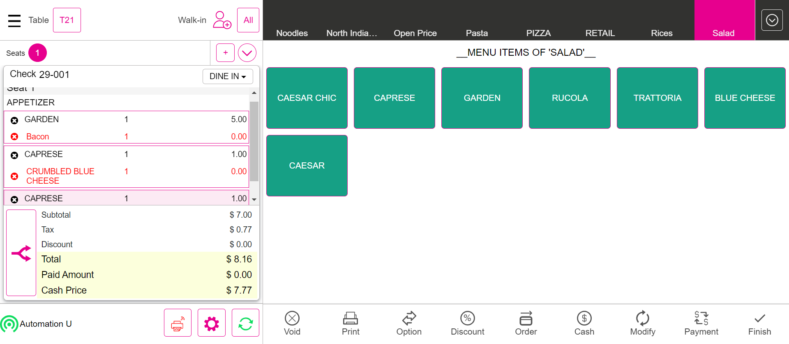FailCustomerGiven I'm logged inAnd I closed the order type windowAnd I click Add Customer ButtonThen I should see the add customer screen in the windowAnd I Click on the Byname OptionAnd Enter the new customer randomlysAnd I click the Save buttonThen I should see the customer profile windowAnd I enter the customer name randomlyStep skippedAnd I click log off button in order screenStep skippedcom.qa.stepdef.Hooks.quit(io.cucumber.java.Scenario)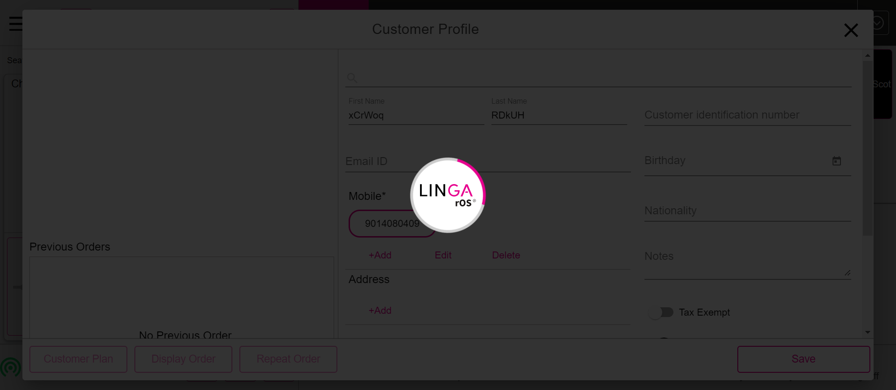FailTaxescom.qa.stepdef.Hooks.initialize(io.cucumber.java.Scenario)Given I'm logged inStep skippedAnd I close the order type windowStep skippedAnd I click AllStep skippedAnd I click Table Layout tabStep skippedAnd I click new check button on the Table layout screenStep skippedAnd I select table as "T10"Step skippedAnd I select the number of seats as "1"Step skippedAnd I tap Continue to finish selecting the number of seatsStep skippedAnd I get check numberStep skippedAnd I select category as "Menu"Step skippedAnd I select menu item as "Burger"Step skippedThen I should verify subtotal value as "$ 7.58"Step skippedThen I should verify tax value as "$ 1.78"Step skippedThen I should verify total value as "$ 9.36"Step skippedAnd I click Cash button for Complete SaleStep skippedAnd I click Exact button on the cash pop-upStep skippedAnd I click Enter Button on the cash pop-upStep skippedAnd I click Table Layout tabStep skippedAnd I click new check button on the Table layout screenStep skippedAnd I select table as "T10"Step skippedAnd I select the number of seats as "1"Step skippedAnd I tap Continue to finish selecting the number of seatsStep skippedAnd I get check numberStep skippedAnd I select category as "Menu"Step skippedAnd I select menu item as "Default Menu"Step skippedThen I should verify subtotal value as "$ 4.88"Step skippedThen I should verify tax value as "$ 0.37"Step skippedThen I should verify total value as "$ 5.25"Step skippedAnd I click Cash button for Complete SaleStep skippedAnd I click Exact button on the cash pop-upStep skippedAnd I click Enter Button on the cash pop-upStep skippedAnd I click Table Layout tabStep skippedAnd I click new check button on the Table layout screenStep skippedAnd I select table as "T7"Step skippedAnd I select the number of seats as "1"Step skippedAnd I tap Continue to finish selecting the number of seatsStep skippedAnd I select category as "Appetizers"Step skippedAnd I select menu item as "RAPINI"Step skippedThen I should see orderscreen with menu item prize as "$ 13.00"Step skippedThen I should see the tax amount reflected to the check as "$ 0.65"Step skippedThen I should see orderscreen with menu item Total as "$ 13.65"Step skippedAnd I change the Quantity of menu Item as "5"Step skippedThen I should see orderscreen with menu item prize as "$ 65.00"Step skippedThen I should see the tax amount reflected to the check as "$ 6.50"Step skippedThen I should see orderscreen with menu item Total as "$ 71.50"Step skippedAnd I change the Quantity1 of menu Item as "8"Step skippedThen I should see orderscreen with menu item prize as "$ 104.00"Step skippedThen I should see the tax amount reflected to the check as "$ 15.60"Step skippedThen I should see orderscreen with menu item Total as "$ 119.60"Step skippedAnd I click Cash button for Complete SaleStep skippedAnd I click Exact button on the cash pop-upStep skippedAnd I click Enter Button on the cash pop-upStep skippedAnd I click Table Layout tabStep skippedAnd I click new check button on the Table layout screenStep skippedAnd I select table as "T8"Step skippedAnd I select the number of seats as "1"Step skippedAnd I tap Continue to finish selecting the number of seatsStep skippedAnd I select category as "Pasta"Step skippedAnd I select menu item as RavioliPesto for Item Based Inclusive TaxStep skippedAnd I select modifier as "Butter"Step skippedAnd I click Done to get backStep skippedThen I should see orderscreen with menu item prize as "$ 15.00"Step skippedThen I should see the tax amount reflected to the check as "$ 1.36"Step skippedThen I should see orderscreen with menu item Total as "$ 15.00"Step skippedAnd I click Cash button for Complete SaleStep skippedAnd I click Exact button on the cash pop-upStep skippedAnd I click Enter Button on the cash pop-upStep skippedAnd I click Table Layout tabStep skippedAnd I click new check button on the Table layout screenStep skippedAnd I select table as "T9"Step skippedAnd I select the number of seats as "1"Step skippedAnd I tap Continue to finish selecting the number of seatsStep skippedAnd I select category as "Arab Biriyani"Step skippedAnd I select menu item as "sambar"Step skippedAnd I change the Quantity of menu Item1 as "11"Step skippedThen I should see orderscreen with menu item prize as "$ 1,100.00"Step skippedThen I should see the tax amount reflected to the check as "$ 96.57"Step skippedThen I should see orderscreen with menu item Total as "$ 1,196.57"Step skippedAnd I click Cash button for Complete SaleStep skippedAnd I click Exact button on the cash pop-upStep skippedAnd I click Enter Button on the cash pop-upStep skippedAnd I click Table Layout tabStep skippedAnd I click new check button on the Table layout screenStep skippedAnd I select table as "T10"Step skippedAnd I select the number of seats as "1"Step skippedAnd I tap Continue to finish selecting the number of seatsStep skippedAnd I select category as "Arab Biriyani"Step skippedAnd I select menu item as "sambar"Step skippedAnd I change the Quantity of menu Item1 as "12"Step skippedThen I should see orderscreen with menu item prize as "$ 1,200.00"Step skippedThen I should see the tax amount reflected to the check as "$ 105.35"Step skippedThen I should see orderscreen with menu item Total as "$ 1,305.35"Step skippedAnd I click Cash button for Complete SaleStep skippedAnd I click Exact button on the cash pop-upStep skippedAnd I click Enter Button on the cash pop-upStep skippedAnd I click Table Layout tabStep skippedAnd I click new check button on the Table layout screenStep skippedAnd I select table as "T11"Step skippedAnd I select the number of seats as "1"Step skippedAnd I tap Continue to finish selecting the number of seatsStep skippedAnd I select category as "Pasta"Step skippedAnd I select menu item as Ling Meatballs for Tax on Item TaxStep skippedAnd I select modifier as "Butter"Step skippedAnd I click Done to get backStep skippedThen I should see orderscreen with menu item prize as "$ 4.00"Step skippedThen I should see the tax amount reflected to the check as "$ 0.44"Step skippedThen I should see orderscreen with menu item Total as "$ 4.44"Step skippedAnd I click Cash button for Complete SaleStep skippedAnd I click Exact button on the cash pop-upStep skippedAnd I click Enter Button on the cash pop-upStep skippedAnd I click Table Layout tabStep skippedAnd I click new check button on the Table layout screenStep skippedAnd I select table as "T8"Step skippedAnd I select the number of seats as "1"Step skippedAnd I tap Continue to finish selecting the number of seatsStep skippedAnd I select category as "Menu"Step skippedAnd I select menu item as "Halwa"Step skippedAnd I change the Quantity of menu Item as "8"Step skippedThen I should see orderscreen with menu item prize as "$ 80.00"Step skippedThen I should see the tax amount reflected to the check as "$ 8.00"Step skippedThen I should see orderscreen with menu item Total as "$ 88.00"Step skippedAnd I click Void button on order management screenStep skippedThen I should see All orders are voidedStep skippedAnd I click Done button on the PopupStep skippedAnd I click AllStep skippedThen I should get back to the Table Layout tabStep skippedAnd I click power buttonStep skippedcom.qa.stepdef.Hooks.quit(io.cucumber.java.Scenario)FailOrdersGiven I'm logged inAnd I closed the order type windowStep skippedAnd I select Menu of Basic validation for QSR as "Salad"Step skippedAnd I click Payment button in the Order Management ScreenStep skippedAnd I click cash button from the payment method popupStep skippedAnd I click Submit button in the Payment popupStep skippedThen I should see the order type windowStep skippedAnd I closed the order type windowStep skippedAnd I select Breakfast as CategoryStep skippedAnd I select menu item as "sappthi"Step skippedAnd I select modifier as "EACH"Step skippedAnd I select modifier as "None"Step skippedAnd I click Done to get backStep skippedAnd I click Payment button in the Order Management ScreenStep skippedAnd I click cash button from the payment method popupStep skippedAnd I click Submit button in the Payment popupStep skippedThen I should see the order type windowStep skippedAnd I closed the order type windowStep skippedAnd I select FOOD as categoryStep skippedAnd I select menu item as "Tuna Tacos"Step skippedAnd I select modifier as "Croutons"Step skippedAnd I click Done to get backStep skippedAnd I click Payment button in the Order Management ScreenStep skippedAnd I click cash button from the payment method popupStep skippedAnd I click Submit button in the Payment popupStep skippedThen I should see the order type windowStep skippedAnd I closed the order type windowStep skippedAnd I select FOOD as categoryStep skippedAnd I select menu item as "B.I. Wings"Step skippedAnd I select modifier as "Spinach"Step skippedAnd I select prefix modifierStep skippedAnd I click Done to get backStep skippedThen I should verify prefix modifier added to the menuStep skippedAnd I click Payment button in the Order Management ScreenStep skippedAnd I click cash button from the payment method popupStep skippedAnd I click Submit button in the Payment popupStep skippedThen I should see the order type windowStep skippedAnd I closed the order type windowStep skippedAnd I select FOOD as categoryStep skippedAnd I select menu item as "Pizza Rucola 12inch"Step skippedAnd I select modifier as "EACH"Step skippedAnd I select modifier as "Smoked Salmon"Step skippedAnd I select prefix modifierStep skippedAnd I click Done to get backStep skippedThen I should verify prefix modifier added to the menuStep skippedAnd I click Payment button in the Order Management ScreenStep skippedAnd I click cash button from the payment method popupStep skippedAnd I click Submit button in the Payment popupStep skippedThen I should see the order type windowStep skippedAnd I close the order type windowStep skippedAnd I click log off button in order screenStep skippedcom.qa.stepdef.Hooks.quit(io.cucumber.java.Scenario)FailVerify the sale in QSR Service TypeGiven I'm logged inAnd I close the order type windowStep skippedAnd I tap QSR button to open the order types comboStep skippedAnd I get check numberStep skippedAnd I select Menu of Basic validation for QSR as "Salad"Step skippedAnd I click Order button in the order management screenStep skippedAnd I click Payment button in the Order Management ScreenStep skippedAnd I select Cash as payment methodStep skippedAnd I click Submit button on the Payment WindowStep skippedAnd I close the order type windowStep skippedAnd I click AllStep skippedAnd I click Closed tab on the Check statsStep skippedThen I should see closed check in closed check tabStep skippedAnd I click Table Layout tabStep skippedAnd I select Menu For Dine order type as "Salad"Step skippedAnd I click Order button in the order management screenStep skippedAnd I click Payment button in the Order Management ScreenStep skippedAnd I select Cash as payment methodStep skippedAnd I click Submit button on the Payment WindowStep skippedAnd I click Table Layout tabStep skippedAnd I click Check Stats tabStep skippedAnd I click Closed tab on the Check statsStep skippedThen I should see closed check in closed check tabStep skippedAnd I click QSR tabStep skippedAnd I select the order type FORHEREStep skippedThen I should see the Ordering Screen with a button with the label "For Here"Step skippedAnd I get check numberStep skippedAnd I select Menu of Basic validation for QSR as "Salad"Step skippedAnd I click Finish Order buttonStep skippedThen I should see the Phone Order tabStep skippedAnd I click the Closed check in new tab windowStep skippedAnd I click Pay Check buttonStep skippedThen I should see the Payment windowStep skippedAnd I click cash button from the payment method popupStep skippedAnd I click Submit button in the Payment popupStep skippedAnd I click Check Stats tabStep skippedAnd I click Closed tab on the Check statsStep skippedThen I should see closed check in closed check tabStep skippedAnd I click QSR tabStep skippedAnd I select the TOGO order typeStep skippedAnd I click Done button to select the order typeStep skippedThen I should see the customer profile windowStep skippedAnd I select searchStep skippedAnd I enter an existing customer's name "Auto ragav"Step skippedAnd I select the customerStep skippedWhen I click the Save buttonStep skippedThen I should see the Ordering Screen with a button with the label "To Go"Step skippedThen I should see customer as "Auto r" added on order screenStep skippedAnd I get check numberStep skippedAnd I select Menu of Basic validation for QSR as "Salad"Step skippedAnd I click Finish Order buttonStep skippedThen I should see the Phone Order tabStep skippedAnd I click the Closed check in new tab windowStep skippedAnd I click Pay Check buttonStep skippedThen I should see the Payment windowStep skippedAnd I click cash button from the payment method popupStep skippedAnd I click Submit button in the Payment popupStep skippedAnd I click Check Stats tabStep skippedAnd I click Closed tab on the Check statsStep skippedThen I should see closed check in closed check tabStep skippedAnd I click power buttonStep skippedcom.qa.stepdef.Hooks.quit(io.cucumber.java.Scenario)FailUpCharge (Verify the Upcharge for the check)Given I'm logged inAnd I closed the order type windowStep skippedAnd I click AllStep skippedAnd I click Table Layout tabStep skippedAnd I click new check button on the Table layout screenStep skippedAnd I select table as "T25"Step skippedAnd I select the number of seats as "1"Step skippedAnd I tap Continue to finish selecting the number of seatsStep skippedAnd I get check numberStep skippedAnd I select upcharge as CategoryStep skippedAnd I select menu item as "Jelabi"Step skippedThen I should verify subtotal value as "$ 2.58"Step skippedThen I should verify tax value as "$ 0.26"Step skippedThen I should verify total value as "$ 2.84"Step skippedAnd I get Total of menu while cash discount appliedStep skippedAnd I click Cash button for Complete SaleStep skippedWhen I verify total Menu same with Fast cash total when Cash discount appliedStep skippedAnd I click Exact button on the cash pop-upStep skippedAnd I click Enter Button on the cash pop-upStep skippedAnd I click Table Layout tabStep skippedAnd I click Check Stats tabStep skippedAnd I click Closed tab on the Check statsStep skippedThen I should see closed check in closed check tabStep skippedAnd I click closed checks details icon buttonStep skippedThen I should see order summary screenStep skippedWhen I verify subtotal value with order summary subtotal valueStep skippedAnd I click power buttonStep skippedcom.qa.stepdef.Hooks.quit(io.cucumber.java.Scenario)FailUpcharge (Role restriction)Given I'm logged in for BarTab for basic validationAnd I click New Tab in the Bar Tab ScreenStep skippedAnd I select upcharge as CategoryStep skippedAnd I select menu item as "Bubble Gum"Step skippedThen I should verify subtotal value as "$ 5.72"Step skippedThen I should verify tax value as "$ 0.57"Step skippedThen I should verify total value as "$ 6.29"Step skippedAnd I get Total of menu while cash discount appliedStep skippedAnd I click Cash button for Complete SaleStep skippedWhen I verify total Menu same with Fast cash total when Cash discount appliedStep skippedAnd I click Exact button on the cash pop-upStep skippedAnd I click Enter Button on the cash pop-upStep skippedAnd I click Table Layout tabStep skippedAnd I click power buttonStep skippedGiven I'm logged inStep skippedAnd I closed the order type windowStep skippedAnd I click AllStep skippedAnd I click Table Layout tabStep skippedAnd I click new check button on the Table layout screenStep skippedAnd I select table as "T25"Step skippedAnd I select the number of seats as "1"Step skippedAnd I tap Continue to finish selecting the number of seatsStep skippedAnd I get check numberStep skippedAnd I select upcharge as CategoryStep skippedAnd I select menu item as "Bubble Gum"Step skippedThen I should verify subtotal value as "$ 5.55"Step skippedThen I should verify tax value as "$ 0.56"Step skippedThen I should verify total value as "$ 6.11"Step skippedAnd I get Total of menu while cash discount appliedStep skippedAnd I click Cash button for Complete SaleStep skippedWhen I verify total Menu same with Fast cash total when Cash discount appliedStep skippedAnd I click Exact button on the cash pop-upStep skippedAnd I click Enter Button on the cash pop-upStep skippedAnd I click Table Layout tabStep skippedAnd I click Check Stats tabStep skippedAnd I click Closed tab on the Check statsStep skippedThen I should see closed check in closed check tabStep skippedAnd I click closed checks details icon buttonStep skippedThen I should see order summary screenStep skippedWhen I verify subtotal value with order summary subtotal valueStep skippedAnd I click power buttonStep skippedcom.qa.stepdef.Hooks.quit(io.cucumber.java.Scenario)
-
java.lang.ClassCastException
1 tests
java.lang.ClassCastException
1 failedStatus Timestamp TestName Fail 23:31:01 PM And I select Menu For Basic validation as "Salad" Basic Validation.Global Till ( PAY IN, PAy Out ).And I select Menu For Basic validation as "Salad"Fail 23:32:46 PM And I select Menu For Basic validation as "Salad" Basic Validation.Verify the Pay in, Payout, Audit, Single cashier out, Close the day for the current business day(Clock in, start till(user till, Global till)).And I select Menu For Basic validation as "Salad"Fail 23:36:33 PM And I select Menu For Basic validation as "Salad" Basic Validation.User Till.And I select Menu For Basic validation as "Salad"Fail 23:38:13 PM And I select Menu For Basic validation as "Salad" Basic Validation.Global Till.And I select Menu For Basic validation as "Salad"Fail 23:39:40 PM And I select Menu For Basic validation as "Salad" Basic Validation.Verify the Cash Discount charge for the check.And I select Menu For Basic validation as "Salad"Fail 23:43:56 PM And I select Menu For Basic validation as "Salad" Basic Validation.Other than Cash Payment.And I select Menu For Basic validation as "Salad"Fail 23:45:21 PM And I select Menu For Basic validation as "TaXx" Basic Validation.Item Service charge (Item Service Charge With Tax ).And I select Menu For Basic validation as "TaXx"Fail 23:46:47 PM And I select Menu For Basic validation as "Salad" Basic Validation.Manual Gratuity Fixed.And I select Menu For Basic validation as "Salad"Fail 23:48:11 PM And I select Menu For Basic validation as "Salad" Basic Validation.Manual Gratuity Varying.And I select Menu For Basic validation as "Salad"Fail 23:49:36 PM And I select Menu For Basic validation as "Salad" Basic Validation.Auto Gratuity Fixed.And I select Menu For Basic validation as "Salad"Fail 23:51:02 PM And I select Menu For Basic validation as "Salad" Basic Validation.Auto Gratuity Varying(Multiple Auto Varying/Fixed gratuity is available means From Step 6 will be applicable).And I select Menu For Basic validation as "Salad"Fail 23:52:31 PM And I select Menu For Basic validation as "Salad" Basic Validation.Batch process.And I select Menu For Basic validation as "Salad" -
org.openqa.selenium.InvalidSelectorException
1 tests
org.openqa.selenium.InvalidSelectorException
1 failedStatus Timestamp TestName Fail 23:53:58 PM Then I should see the customer profile window Basic Validation.Customer.Then I should see the customer profile window -
java.lang.NullPointerException
1 tests
java.lang.NullPointerException
1 failedStatus Timestamp TestName Fail 23:29:57 PM And I click Refund button in the operation window Basic Validation.Refund.And I click Refund button in the operation windowFail 23:41:02 PM Given Login with valid pin in split screen Basic Validation.Transfer Item from one Check to another Check.Given Login with valid pin in split screenFail 23:41:53 PM Given Login with valid pin in split screen Basic Validation.Transfer To Table from one Check to another Check.Given Login with valid pin in split screen -
org.openqa.selenium.NoSuchElementException
1 tests
org.openqa.selenium.NoSuchElementException
1 failedStatus Timestamp TestName Fail 23:34:16 PM And I select FOOD as category Basic Validation.Added tip is Correct or not.And I select FOOD as categoryFail 23:35:21 PM And I created sale for Cashier out1 as "FOOD" Basic Validation.Cashier OUT PULL Request.And I created sale for Cashier out1 as "FOOD"Fail 23:42:48 PM And User select the Empty table and take the order Basic Validation.Verify the "Transfer to Server" from one check to another check.And User select the Empty table and take the order -
org.openqa.selenium.NoSuchWindowException
1 tests
org.openqa.selenium.NoSuchWindowException
1 failedStatus Timestamp TestName Fail 23:53:59 PM com.qa.stepdef.Hooks.initialize(io.cucumber.java.Scenario) Basic Validation.Taxes.com.qa.stepdef.Hooks.initialize(io.cucumber.java.Scenario)Fail 23:54:05 PM com.qa.stepdef.Hooks.quit(io.cucumber.java.Scenario) Basic Validation.Taxes.com.qa.stepdef.Hooks.quit(io.cucumber.java.Scenario)Fail 23:54:05 PM Given I'm logged in Basic Validation.Orders.Given I'm logged inFail 23:54:05 PM com.qa.stepdef.Hooks.quit(io.cucumber.java.Scenario) Basic Validation.Orders.com.qa.stepdef.Hooks.quit(io.cucumber.java.Scenario)Fail 23:54:06 PM Given I'm logged in Basic Validation.Verify the sale in QSR Service Type.Given I'm logged inFail 23:54:06 PM com.qa.stepdef.Hooks.quit(io.cucumber.java.Scenario) Basic Validation.Verify the sale in QSR Service Type.com.qa.stepdef.Hooks.quit(io.cucumber.java.Scenario)Fail 23:54:06 PM Given I'm logged in Basic Validation.UpCharge (Verify the Upcharge for the check).Given I'm logged inFail 23:54:06 PM com.qa.stepdef.Hooks.quit(io.cucumber.java.Scenario) Basic Validation.UpCharge (Verify the Upcharge for the check).com.qa.stepdef.Hooks.quit(io.cucumber.java.Scenario)Fail 23:54:06 PM Given I'm logged in for BarTab for basic validation Basic Validation.Upcharge (Role restriction).Given I'm logged in for BarTab for basic validationFail 23:54:06 PM com.qa.stepdef.Hooks.quit(io.cucumber.java.Scenario) Basic Validation.Upcharge (Role restriction).com.qa.stepdef.Hooks.quit(io.cucumber.java.Scenario)
-
@MainBAsic
26 tests
@MainBAsic
2 passed 24 failedStatus Timestamp TestName Pass 23:27:08 PM Cashier Out From Till Management Screen Basic Validation.Cashier Out From Till Management ScreenFail 23:29:06 PM Refund Basic Validation.RefundFail 23:29:58 PM Global Till ( PAY IN, PAy Out ) Basic Validation.Global Till ( PAY IN, PAy Out )Fail 23:31:34 PM Verify the Pay in, Payout, Audit, Single cashier out, Close the day for the current business day(Clock in, start till(user till, Global till)) Basic Validation.Verify the Pay in, Payout, Audit, Single cashier out, Close the day for the current business day(Clock in, start till(user till, Global till))Fail 23:33:18 PM Added tip is Correct or not Basic Validation.Added tip is Correct or notPass 23:34:22 PM Bussiness Date Verify with Close day window Date Basic Validation.Bussiness Date Verify with Close day window DateFail 23:35:21 PM Cashier OUT PULL Request Basic Validation.Cashier OUT PULL RequestFail 23:35:27 PM User Till Basic Validation.User TillFail 23:37:05 PM Global Till Basic Validation.Global TillFail 23:38:46 PM Verify the Cash Discount charge for the check Basic Validation.Verify the Cash Discount charge for the checkFail 23:40:12 PM Transfer Item from one Check to another Check Basic Validation.Transfer Item from one Check to another CheckFail 23:41:02 PM Transfer To Table from one Check to another Check Basic Validation.Transfer To Table from one Check to another CheckFail 23:41:53 PM Verify the "Transfer to Server" from one check to another check Basic Validation.Verify the "Transfer to Server" from one check to another checkFail 23:43:03 PM Other than Cash Payment Basic Validation.Other than Cash PaymentFail 23:44:29 PM Item Service charge (Item Service Charge With Tax ) Basic Validation.Item Service charge (Item Service Charge With Tax )Fail 23:45:54 PM Manual Gratuity Fixed Basic Validation.Manual Gratuity FixedFail 23:47:19 PM Manual Gratuity Varying Basic Validation.Manual Gratuity VaryingFail 23:48:44 PM Auto Gratuity Fixed Basic Validation.Auto Gratuity FixedFail 23:50:10 PM Auto Gratuity Varying(Multiple Auto Varying/Fixed gratuity is available means From Step 6 will be applicable) Basic Validation.Auto Gratuity Varying(Multiple Auto Varying/Fixed gratuity is available means From Step 6 will be applicable)Fail 23:51:34 PM Batch process Basic Validation.Batch processFail 23:53:04 PM Customer Basic Validation.CustomerFail 23:53:59 PM Taxes Basic Validation.TaxesFail 23:54:05 PM Orders Basic Validation.OrdersFail 23:54:06 PM Verify the sale in QSR Service Type Basic Validation.Verify the sale in QSR Service TypeFail 23:54:06 PM UpCharge (Verify the Upcharge for the check) Basic Validation.UpCharge (Verify the Upcharge for the check)Fail 23:54:06 PM Upcharge (Role restriction) Basic Validation.Upcharge (Role restriction)
Started
Dec 14, 2023 11:27:06 PM
Ended
Dec 14, 2023 11:54:06 PM
Features Passed
0
Features Failed
1
Features
Scenarios
Steps
Timeline
Tags
| Name | Passed | Failed | Skipped | Others | Passed % |
|---|---|---|---|---|---|
| @MainBAsic | 2 | 24 | 0 | 0 | 7.692% |